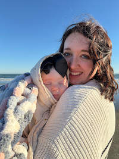
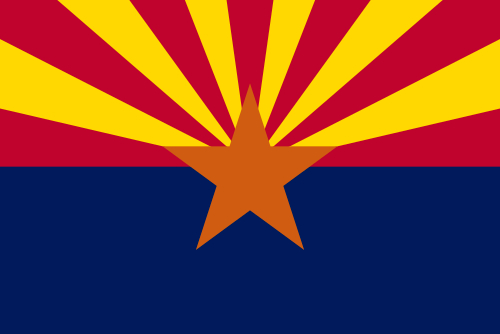

Julie R. Jones
About Me

Hello! My name is Julie Jones and I am from Mesa, Arizona. I enjoy reading, writing, playing video games, crocheting, making sourdough, and computer programming. I have my Bachelor's in Computer Science and currently work as a Configuration Supervisor in the fenestration industry. My husband and I have been married for seven years now and we just recently added to our family, our daughter named Emberly. I am excited to start teaching her all that I know. She is already 9 months old and is cruising all over the place and babbling or pteradactyl screeching at the top of her lungs. We have our hands full, but we love it! I'm excited to continue learning Web Development. I want to utilize these skills to do some freelance work in my plethora of free time (that I totally have). I can't wait to learn more about HTML/CSS and now JavaScript to make really cool webpages and sites.
Arizona, USA

Arizona is a southwestern desert state. It is best known for the many national parks and natural environments like the Grand Canyon, the Sedona River, and the Saguaro National Park. It is a very dry and hot environment in the more southern part, while the northern part has more trees and can sometimes get snow.